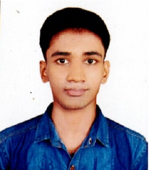

An Orator, Chess Player, and All time Learner
I am a dynamic student currently navigating the intersection of deep technical mathematics at NIT Warangal and modern digital business at IIM Bangalore. I balance my analytical approach to problem-solving with a passion for effective communication, team leadership, and creative expression.
My ambition is to build an educational startup that decouples the fear of assessment from the learning process. I am driven by a vision to cultivate natural curiosity and foster genuine, interest-driven learning in mathematics and science.
Outside of academics, I thrive on stage performing stand-up comedy and organizing open mic events. I am also highly strategic, enjoying competitive chess, and I have a deep passion towards Teaching and Learning in general.